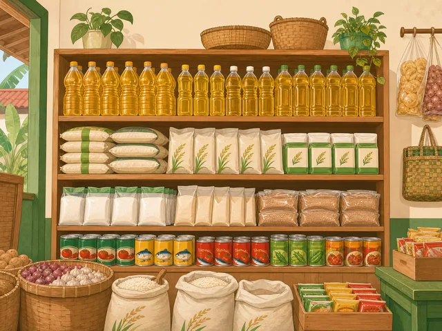
PerdaganganSunarti
Sembako
Detail Usaha
Sunarti
Sembako
- Berdiri
- 2009
- Legalitas
- Belum memiliki legalitas
- Dusun
- Nglarangan
Kenali usaha warga yang menggerakkan ekonomi lokal melalui produk, keterampilan, dan layanan dari desa.
Direktori ini merangkum data publik UMKM yang terdata pada Juli 2026. Arahkan kursor, sentuh, atau fokuskan kartu lalu tekan Enter/Spasi untuk melihat detail setiap usaha. Informasi kontak dan data operasional pribadi tidak ditampilkan.
Pilih satu atau beberapa dusun untuk menyaring daftar. Arahkan kursor, sentuh, atau fokuskan kartu lalu tekan Enter/Spasi untuk membaliknya. Status legalitas mengikuti data sumber.
24 usaha ditampilkan
Pilih setidaknya satu dusun pada filter di atas untuk melihat daftar UMKM.

PerdaganganSembako
Sembako
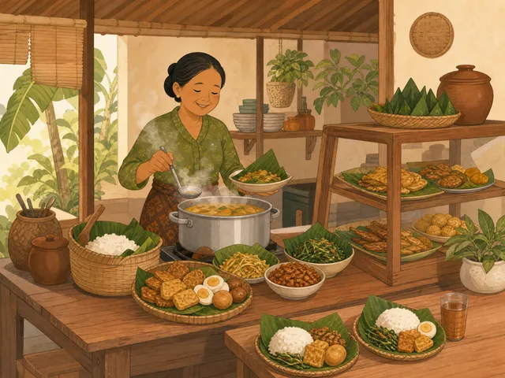
KulinerMakanan
Makanan
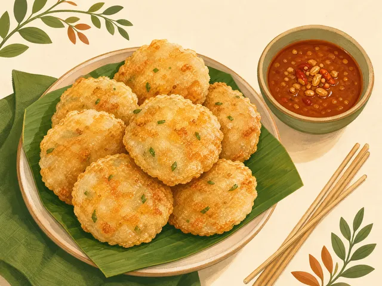
KulinerCireng
Cireng
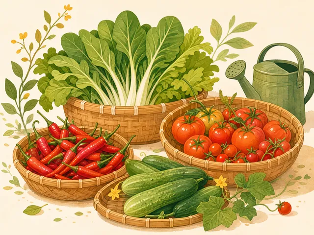
PertanianSayuran
Sayuran
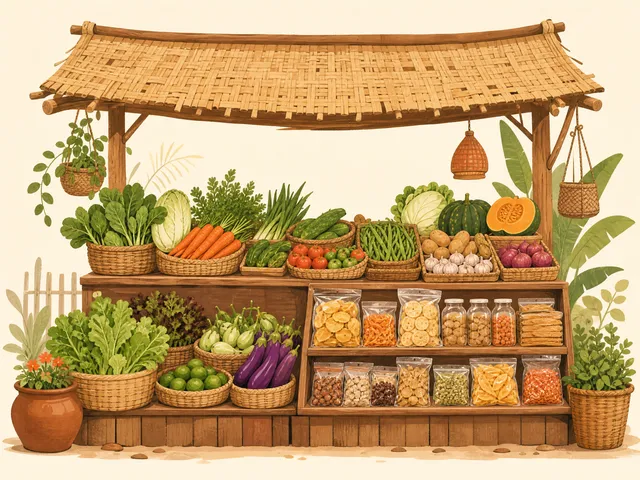
PerdaganganMakanan dan sayur
Makanan dan sayur
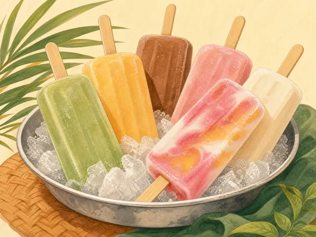
KulinerEs mambo
Es mambo
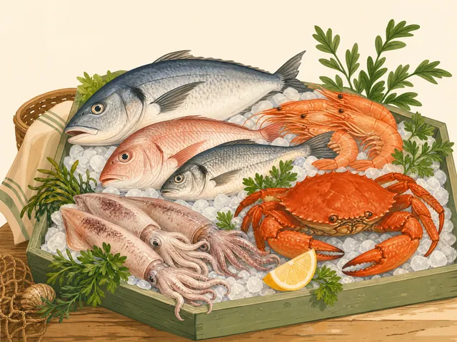
KulinerSeafood
Seafood
Sembako
Sembako
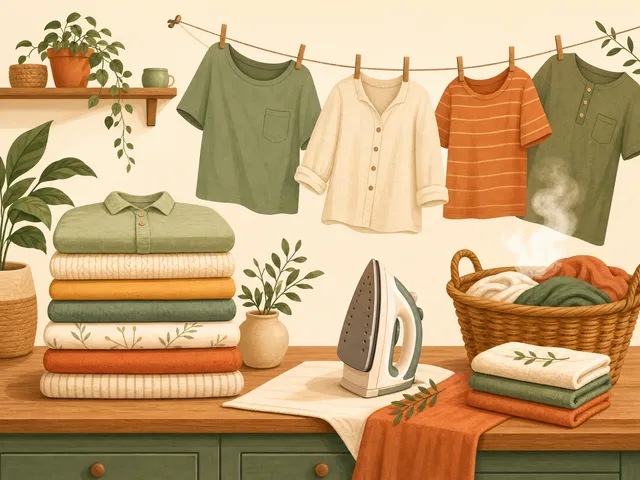
Kuliner & JasaLaundry
Laundry
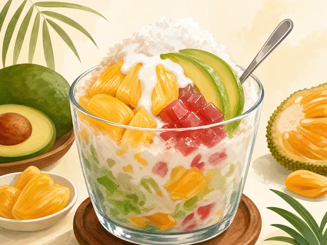
KulinerEs teller
Es teller
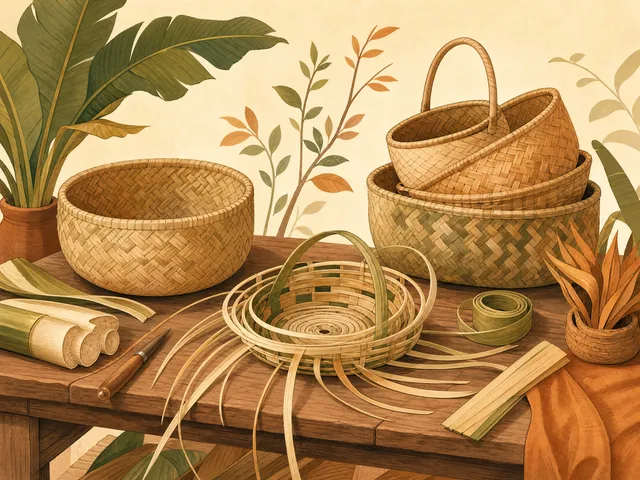
Kerajinan & PerdaganganPelepah pisang dan sembako
Pelepah pisang dan sembako
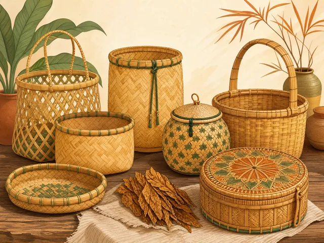
KerajinanKeranjang tembakau
Keranjang tembakau
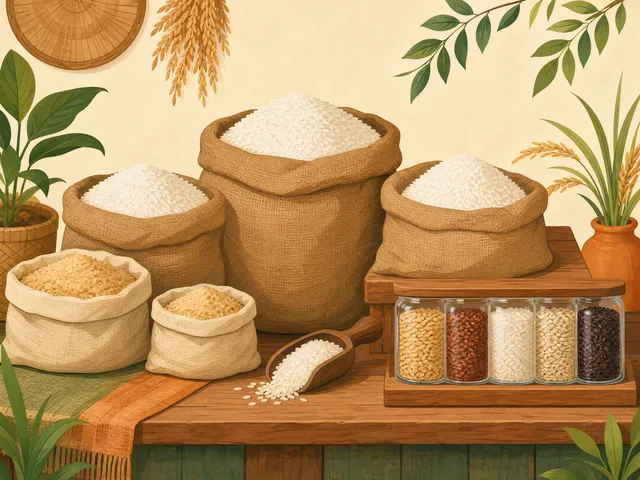
PertanianKatul dan beras
Katul dan beras
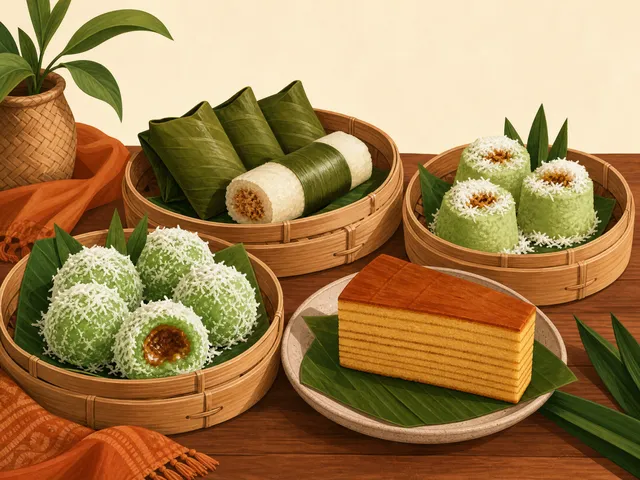
KulinerKue basah
Kue basah
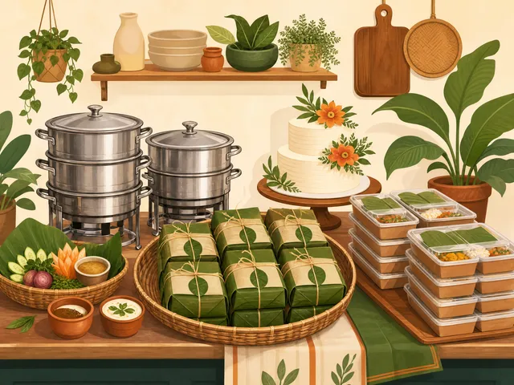
KulinerKue basah dan catering
Kue basah dan catering
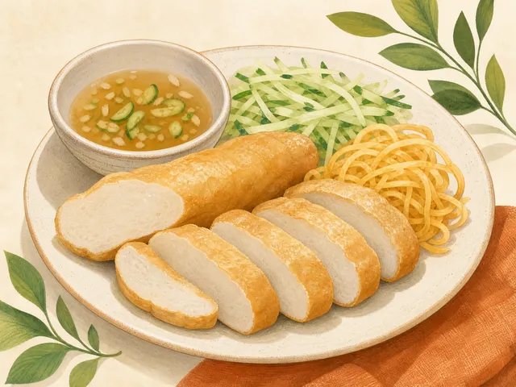
KulinerPempek
Pempek
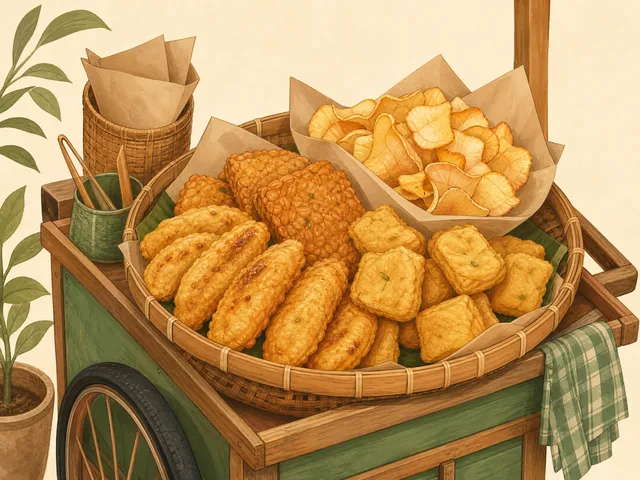
Kuliner & PerdaganganGorengan dan snack
Gorengan dan snack
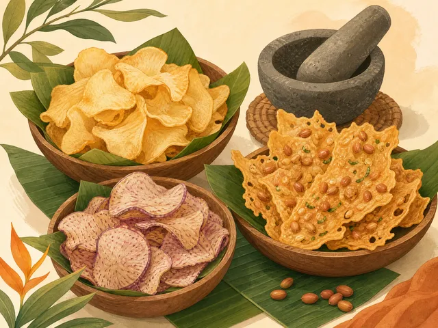
KulinerKeripik singkong, keripik talas, dan peyek kacang
Keripik singkong, keripik talas, dan peyek kacang
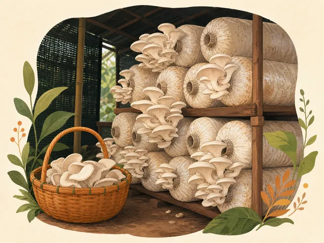
PertanianJamur
Jamur
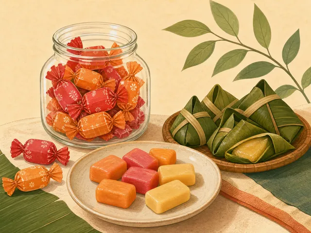
KulinerPermen
Permen
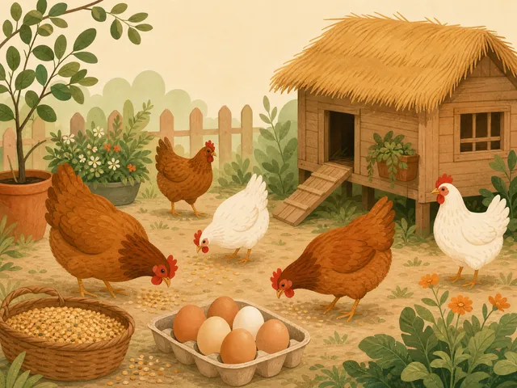
PeternakanPeternakan ayam
Peternakan ayam
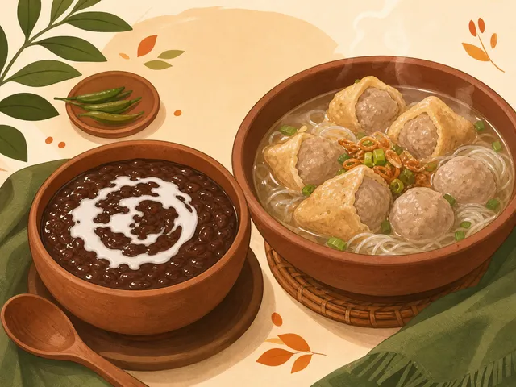
KulinerJenang dan tahu bakso
Jenang dan tahu bakso
Keripik singkong, pangsit, dan putil
Keripik singkong, pangsit, dan putil
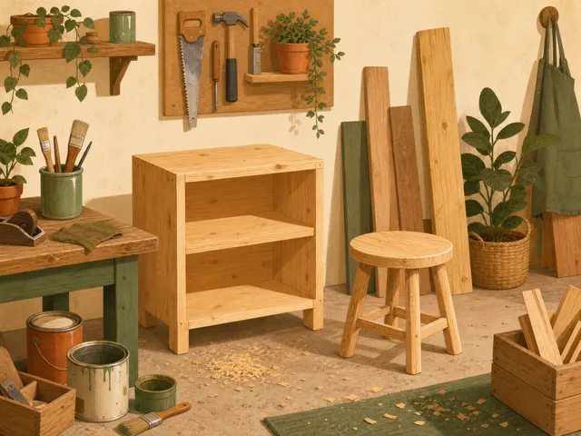
Jenis usaha belum terverifikasiInterior
Interior